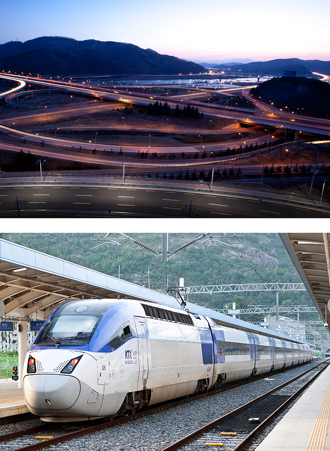
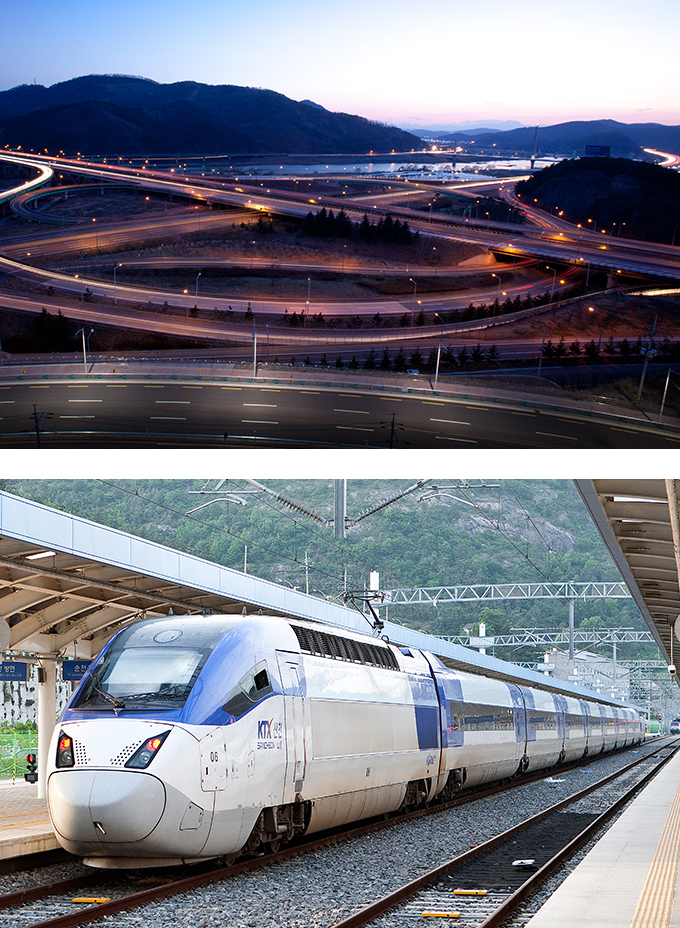

连接全国各地的交通中枢
- Home
- 投资优势
- 连接全国各地的交通中枢
- 连接全国各地的交通中枢
连接全国各地的交通中枢

-
机场运行从大邱国际机场到国内、国外国际机场的航班 (http://www.airport.co.kr/mbs/daegu/)
-
港湾码头1 个小时的路程范围内分布着 5 个港口(浦项港、蔚山港、马山港、釜山国际港、釜山新港)
-
陆地交通
- 连接全国各地的 7 条高速公路经过此地
(京釜、龟马、中央、88、中部内陆、大邱-浦项、大邱-釜山) - KTX 高速列车：大邱-首尔 99分钟
- 2 条铁路：京釜线、大邱线
- 2 条地铁路线
1 号线(大谷~安心)；2 号线(文阳~沙月) 地铁 3 号线（漆谷~凡物）正在建设中，同时还正在推进延长 2 号线至庆山
- 连接全国各地的 7 条高速公路经过此地
 
